| HOME | PERSONAL | PROJECTS | LINKS |
Figure di interferenza causate da un'array tridimensionale si sorgenti sincrone.
n = 10;
p = Table[N[Point[{Mod[i, n]+1/(2 n), Floor[Mod[i, n^2]/n]+1/(2 n), Floor[Floor[Mod[i, n^3]/n]/n]}/n + 1/(2 n)]],
{i, 0, n^3 - 1}];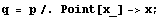
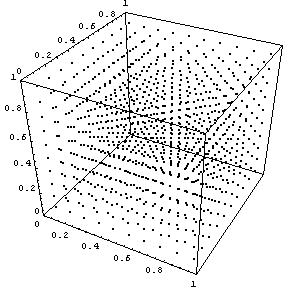
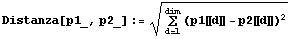
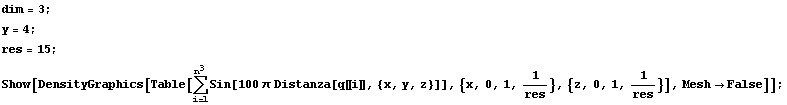
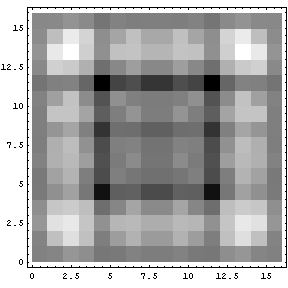
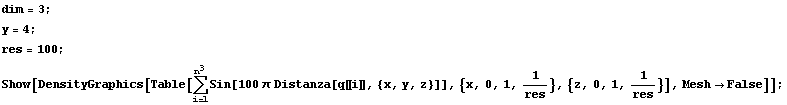
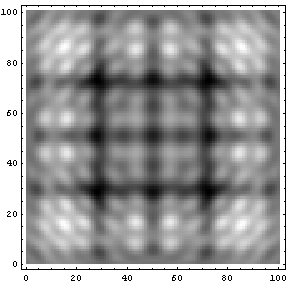
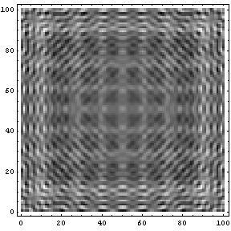
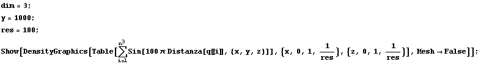
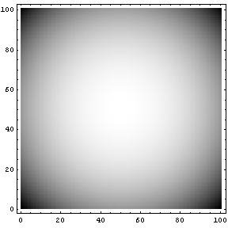
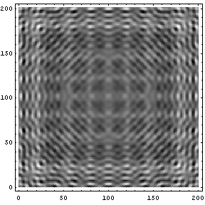
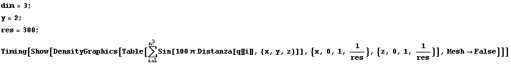
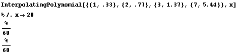
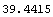
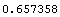
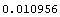
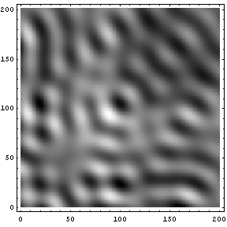
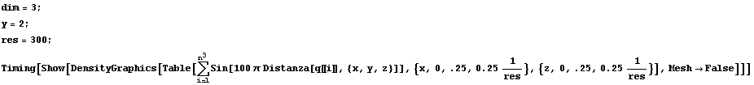
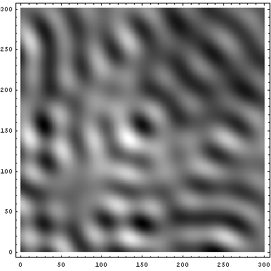
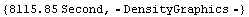
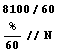
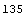
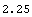
| HOME | PERSONAL | PROJECTS | LINKS |